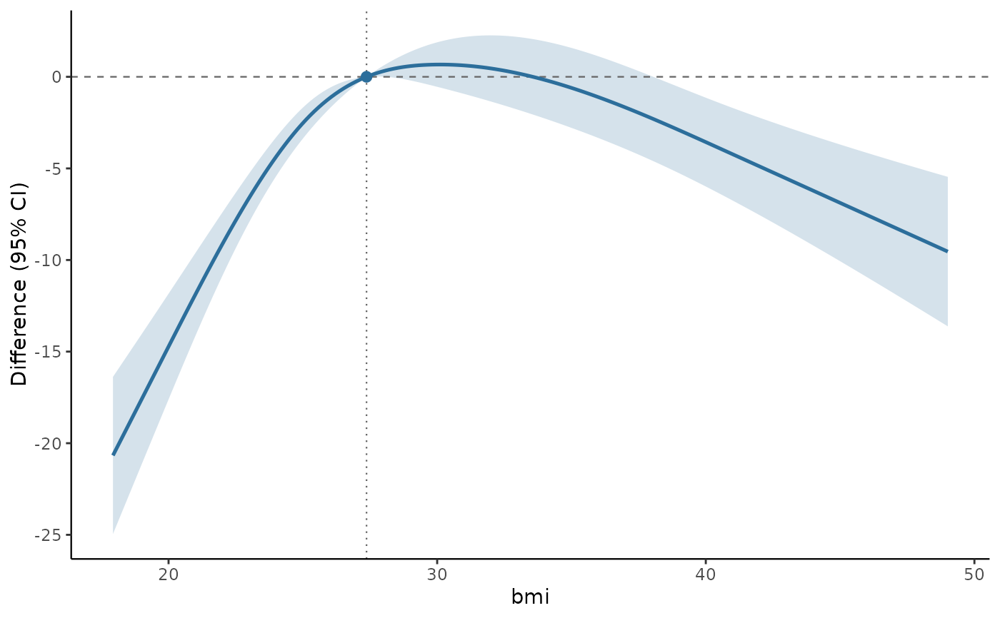
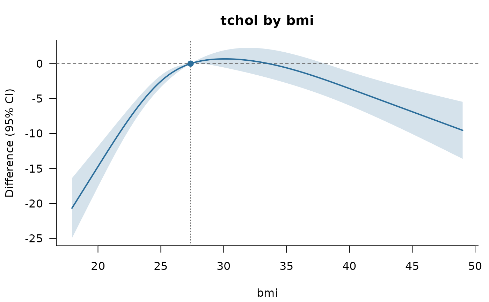
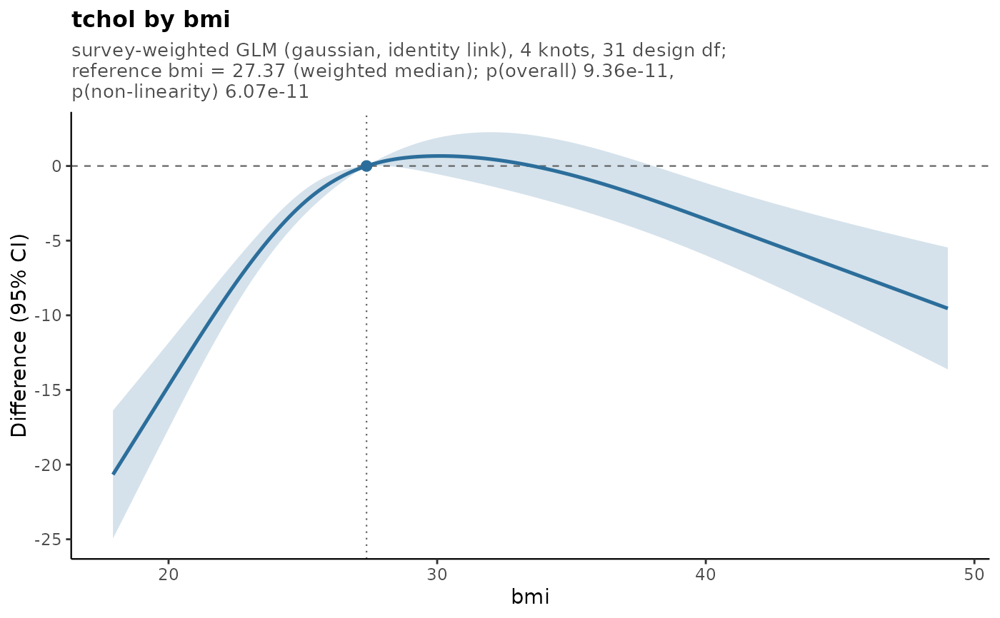
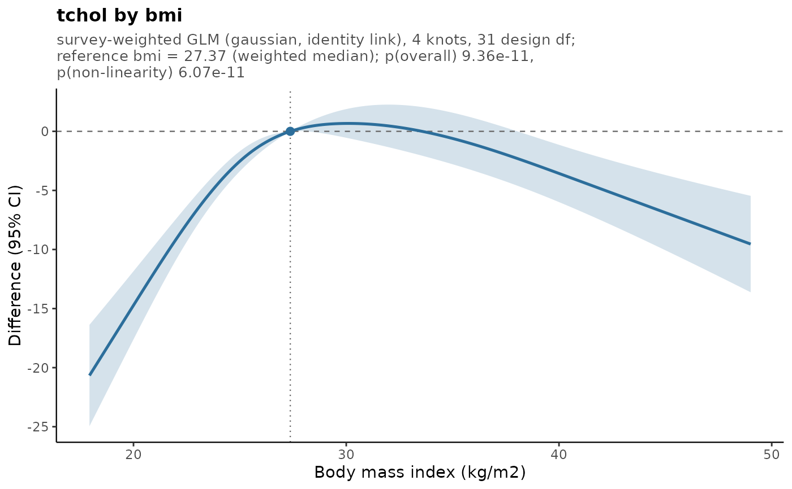

Draws the estimated exposure-response curve with its confidence band, a line at the null, and a marker at the reference value. Ratio measures (hazard, odds and rate ratios) are drawn on a logarithmic y axis, which is the scale on which the confidence band is symmetric; mean differences are drawn on a linear axis.
Arguments
- xlab, ylab
Axis labels. The defaults name the exposure and the effect measure.
- title
Plot title.
NULL(default) leaves it empty;TRUEbuilds one from the fit.- rug
Draw a rug of the observed exposure values along the bottom axis. Off by default.
- band_alpha
Opacity of the confidence band.
- colour
Colour for the curve and the band. Ignored when the fit has an effect modifier, in which case groups are coloured by the default discrete scale.
- facet
For a fit with an effect modifier,
TRUEputs each group in its own panel instead of overlaying them.- ...
Ignored.
- x, object
An object from
svyrcs().- backend
Which graphics system to draw with.
"auto"(default) uses ggplot2 when it is installed and base graphics otherwise;"ggplot2"and"base"force one or the other. Forcing"ggplot2"without the package installed is an error.
Value
autoplot() always returns a ggplot object.
plot() draws, and what it returns depends on the backend it used: the ggplot object
(invisibly) on the ggplot2 path, and the fit itself (invisibly) on the base graphics path. Code
that relies on the returned ggplot, such as plot(fit) + ggplot2::labs(...), therefore needs
ggplot2 to be installed. Pass backend = "ggplot2" to make that requirement explicit and get a
clear error rather than a surprise.
Details
ggplot2 is used when it is installed, and an equivalent base graphics plot is drawn when it is
not, so plotting always works even though ggplot2 is only a suggested dependency. The two look
similar but are not pixel-identical; use backend to force one or the other.
On the ggplot2 path the result is an ordinary ggplot object returned invisibly, so it can be
modified in the usual way: plot(fit) + ggplot2::labs(x = "Body mass index").
Requires ggplot2
autoplot() needs ggplot2, which is a suggested rather than a required dependency. Because of
that this package cannot re-export the generic, so autoplot(fit) needs library(ggplot2) first.
plot(fit) works either way, falling back to base graphics.
Examples
design <- survey::svydesign(
id = ~psu, strata = ~strata, weights = ~weight,
nest = TRUE, data = nhanes_bmi
)
fit <- svyrcs(tchol ~ rcs(bmi, 4) + age + sex, design = design)
# works with or without ggplot2 installed
plot(fit)

plot(fit, backend = "base", title = TRUE)

# modifying the plot needs ggplot2
if (requireNamespace("ggplot2", quietly = TRUE)) {
plot(fit, title = TRUE) + ggplot2::labs(x = "Body mass index (kg/m2)")
}

